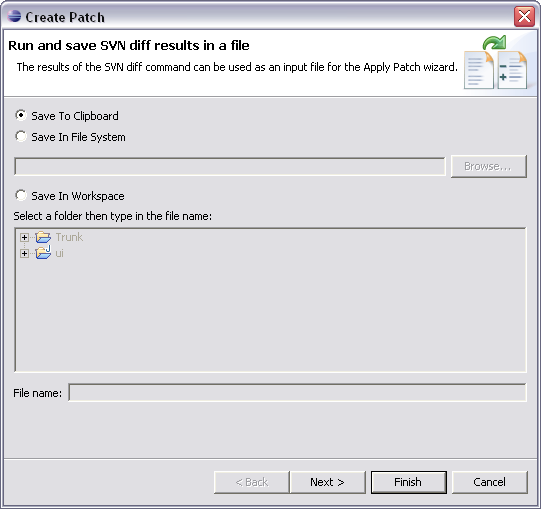

This command is initiated via the menu option.
This command lets you create a Patch in unified diff format.

The content of the patch is determined by the scope of the resources selected with the option. The output of the Patch operation can be directed to either the clipboard, file system or saved in a workspace project. Clicking Next will allow you to choose whether the Patch processing should recurse through subdirectories within your selection.
Be aware that changes to binary files are never shown in the patch. Also, in order to have new files included in the patch, you must first take the Team > Add to Version Control option.
For a more detailed discussion on this topic, take a look at the CVS documentation: Working with patches.
Related Tasks
None
Related Reference